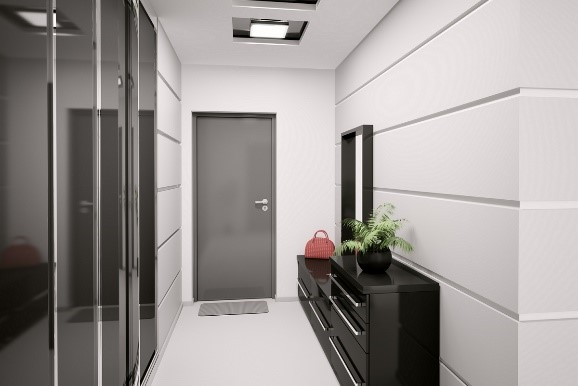
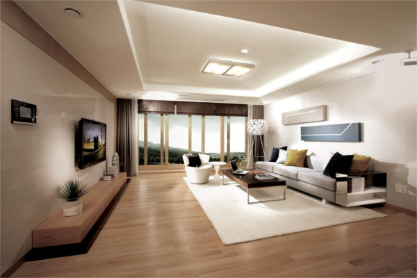
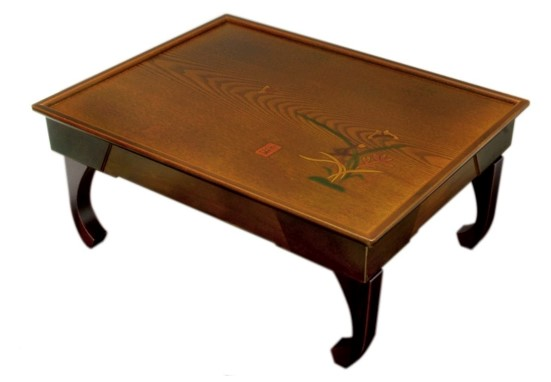

Confused yet? Just wait till we get into bigger numbers. In English, following the thousands unit we make a new unit for every three zeros added. So, we have 1000 (thousand), 1,000,000 (million), 1,000,000,000 (billion), and so on. Since Chinese-based numbers have another higher base unit than 1,000 they create a new unit for every 4 zeros added. The result is 만 (ten thousand), 억 (one-hundred million), and 조 (1 trillion). It does seem like they are skipping a lot of numbers in there, but the nice thing is that you actually have fewer units to remember. Here’s a full chart to help you settle this in your brain now.
Elevator
door
entryway
shoes
shoe rack
living room
couch/sofa
Korean floor table
table (Western-style)
chair
floor
Once you arrive at your friend’s apartment, you’ll likely need to press in the apartment number and call up to them from the keypad at the main door. Your friend can can then see your face and unlock the building door. At that point you’ll go in and ride the 엘리베이터 (elevator) up to your friend’s apartment. Then you go up to the 문 (door) and knock or ring the doorbell. 문 is a Korean word for door that can also apply broadly to any opening, entrance, or gateway.
Finally your friend will come and open up the door and greet you, possibly saying “환영해요!” or “들어오세요!”. Most newer Korean homes have a 현관 (entryway) with closet space for coats, shoes, and various other household items. It’s in this space where you will be expected to take off your shoes. Unlike many Western civilizations, in Korea shoes have traditionally only been worn outside the home and this tradition has carried on to the present day. Furthermore, carpet is extremely rare in Korea. As a result, what you will typically find is sparkly clean tile or linoleum floors.
After you take off your 신발 (shoes) you can arrange them neatly at the entrance or put them on a 신발장 (shoe rack) if your friend has one. At this point you’ll step up to be ushered into the 거실 or living room (entryways are typically a half-step lower). So far so good but this is where things can get a little bit difficult. Depending on the size of your friend's apartment and/or habits of your friend you may invited to sit on the couch… or on the 바닥 (floor).
Floor sitting is a healthy practice that is the traditional way to sit in Korea. While 소파 (couch/sofa) have become common in Korea it’s not a given. Sitting at a table during meal times is also not gauranteed. Since space is highly limited in a country Korea’s size many Korean homes have no dining table and instead pull out folding tables designed to sit about a foot off the ground. These small tables are called 상. Western style tables are known as 테이블. Korean homes that have 테이블 also have 의자 (chairs) to match.



